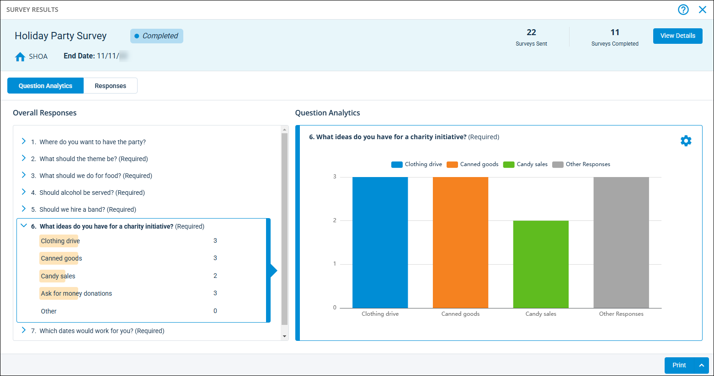
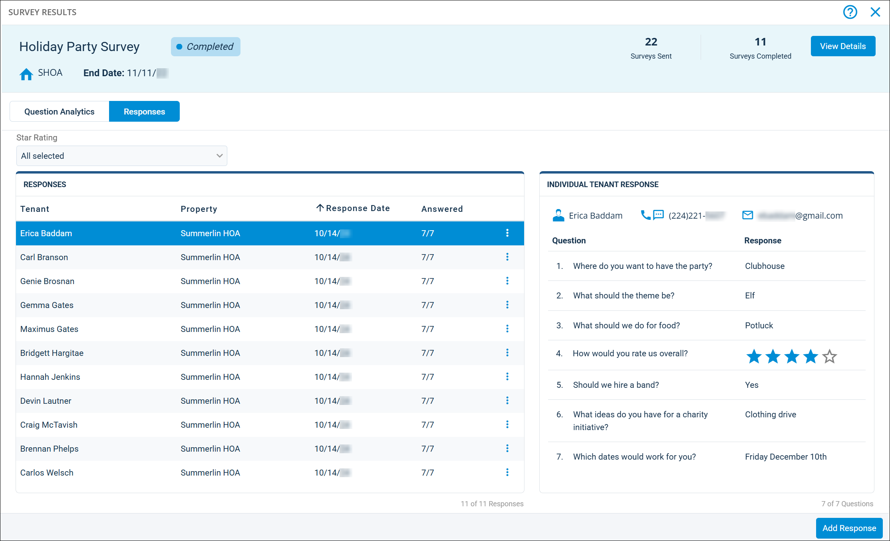

Source: https://rmxhelp.rentmanager.com/Topics/Express/CSH/Survey-Results.htm
Survey Results (Pop-Up)
As residents begin responding to your survey, you can view real-time results. These results include metrics, such as the number of responses submitted to the survey, individual responses for each tenant, and a visual representation of the results in a bar graph. You can create one-time surveys to be published to the Tenant Web Access (TWA) portal for tenants to submit their answers and expire after a specified date, or create ongoing surveys with public survey links which allow tenants to submit answers through a portal without needing a TWA account.
Related Privileges
| Group | Privilege | Column |
|---|---|---|
| Surveys | View Survey Results | Enabled |
For more information, refer to Control User Access.
To view a survey's results, go to  arrow_forward Communication arrow_forward Surveys arrow_forward Surveys. Then for the survey you wish to view, click
arrow_forward Communication arrow_forward Surveys arrow_forward Surveys. Then for the survey you wish to view, click  arrow_forward View Results.
arrow_forward View Results.

The scoreboard at the top displays general information about the survey, such as the status, number of surveys sent, and number of surveys completed. Surveys submitted via Tenant Web Access (TWA) also display property short name and the date on which the survey expires.
Page Filters
For surveys sent via email, you can filter the results by property, date, or agent. These filter options do not display for one-time surveys published to TWA.
| Filter | Description |
|---|---|
|
Properties |
Include only results from tenants leasing at a specific property or properties. |
|
Leasing Agent |
Include only results from tenants assigned to specific leasing agents. Leasing agents are designated on each tenant's details page on the Miscellaneous tile. This filter displays only for surveys with a survey type of Tenant. |
|
Assigned To |
Include only results from surveys linked to issues that are assigned to specific service technicians. All Rent Manager users with at least 1 issue assigned to them display in the list. This filter displays only for surveys with a survey type of Service Issue. |
|
Response Date |
Include only results submitted within a specified date range. |
|
Show Inactive Questions |
If checked, include all questions in the survey, even if the Active option is unchecked. |
Question Analytics Tab
The Question Analytics tab displays an overall summary of all the responses to each question in the survey. The sections on this tab are described below.
| Section | Description | |||||||
|---|---|---|---|---|---|---|---|---|
|
Overall Responses |
Each question in the survey displays with a summary of the responses. Questions with predetermined options display the total amount of votes given to each option, while text-type questions display a list of answers submitted for that question. |
|||||||
|
Question Analytics |
A graph displays for the selected question, providing a visual representation of the votes for up to three answer options for that question. If the selected question accepts text-type responses, a list of all answers submitted for that question displays. For questions that display a graph, click the The options below can be configured for the graph. The available options vary depending on the question type. |
|||||||
|
Responses Tab

The Responses tab displays the results for each tenant who answered the survey. Each tile on this tab is described below.
Responses Tile
The Responses tile displays a list all the tenants that submitted their votes for the survey. In the Star Rating field, you can filter this list to display only tenants who submitted ratings that are a specified number of stars. This option displays only if at least one of the questions in the survey has a type of Star Rating (1-5).
Each column on the tile is described below.
| Column | Description |
|---|---|
|
Tenant |
The full name of the tenant who submitted the survey response. |
|
Property |
The full name of the property where the tenant is leasing. |
|
Response Date |
The date on which the tenant submitted their response to the survey. |
|
Answered |
The number of questions the tenant answered out of the total number of questions. Questions Answered / Total Questions |
Individual Tenant Response Tile
When you select a tenant in the list on the Responses tile, that tenant's name, contact information, and survey answers display on the Individual Tenant Response tile.
Each column on the tile is described below.
| Column | Description |
|---|---|
|
Question |
The full question in the survey. |
|
Response |
The answer submitted by the selected tenant for the associated question. |